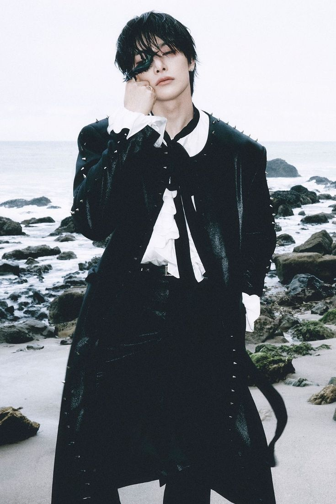
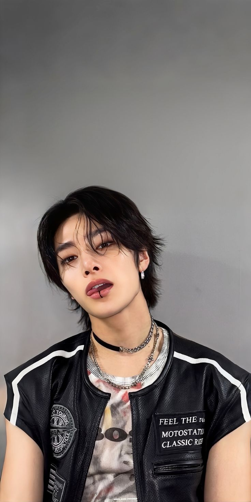

I.N (양정인)
Perfil del Artista
Dramas
A-TEEN 2 (Naver TV, 2019) - Aparición especial / Cameo
Programas de Televisión
Stray Kids (Mnet, 2017) - Programa de supervivencia
Programas de Radio
(SBS) POWER FM Park Sohyun's LOVE GAME (03.11.2018) (Junto a Chan y Hyun Jin)
(SBS Radio) NCT Night Night (15.11.2018) (Junto a Seung Min, Han, Felix y Hyun Jin)
Curiosidades
Estudios: School of Performing Arts Seoul (SOPA) (Graduado).
Periodo de entrenamiento: 2 años.
Idiomas: Coreano (Materno) e Inglés (Intermedio).
Religión: Católico (Nombre bautismal: John).
Modelo a seguir: Bruno Mars.
Artista favorito: Charlie Puth.
Hobbies: Escuchar ASMR, escuchar rock y pop, y ver videos de Mukbang.
Habilidad especial: Cantar música Trot tradicional coreana con gran maestría.
Color favorito: Fucsia.
Fue modelo infantil a la edad de 7 años.
Tiene registradas 5 canciones con derechos de autor a su nombre ante la KOMCA.
Es adorado por todos los miembros por ser el alegre y talentoso maknae del grupo.
Galería de Fotos


